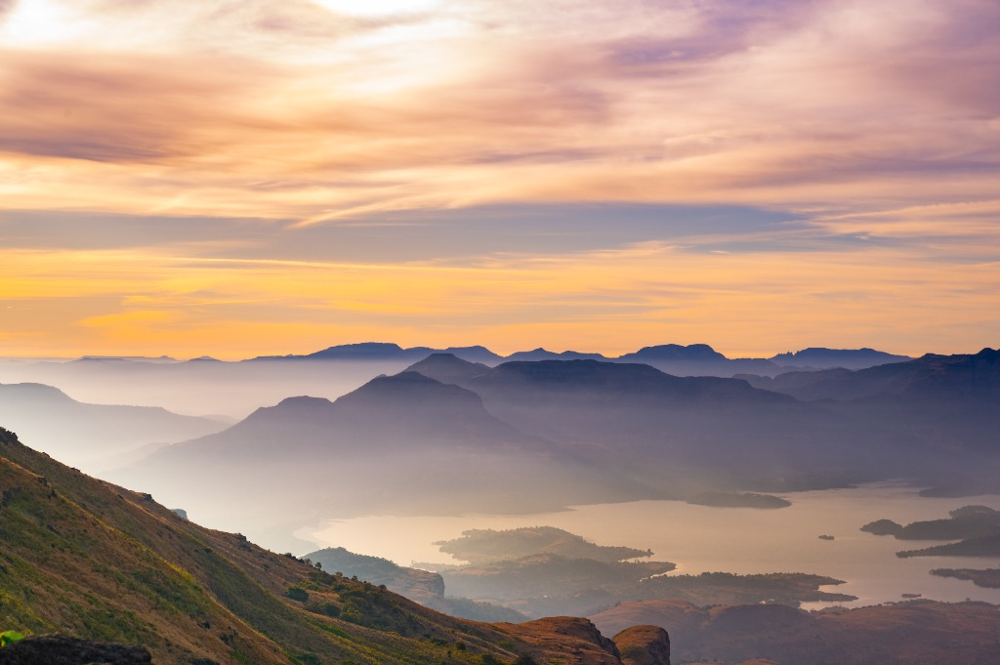
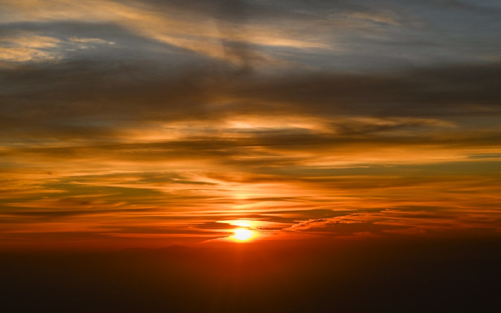
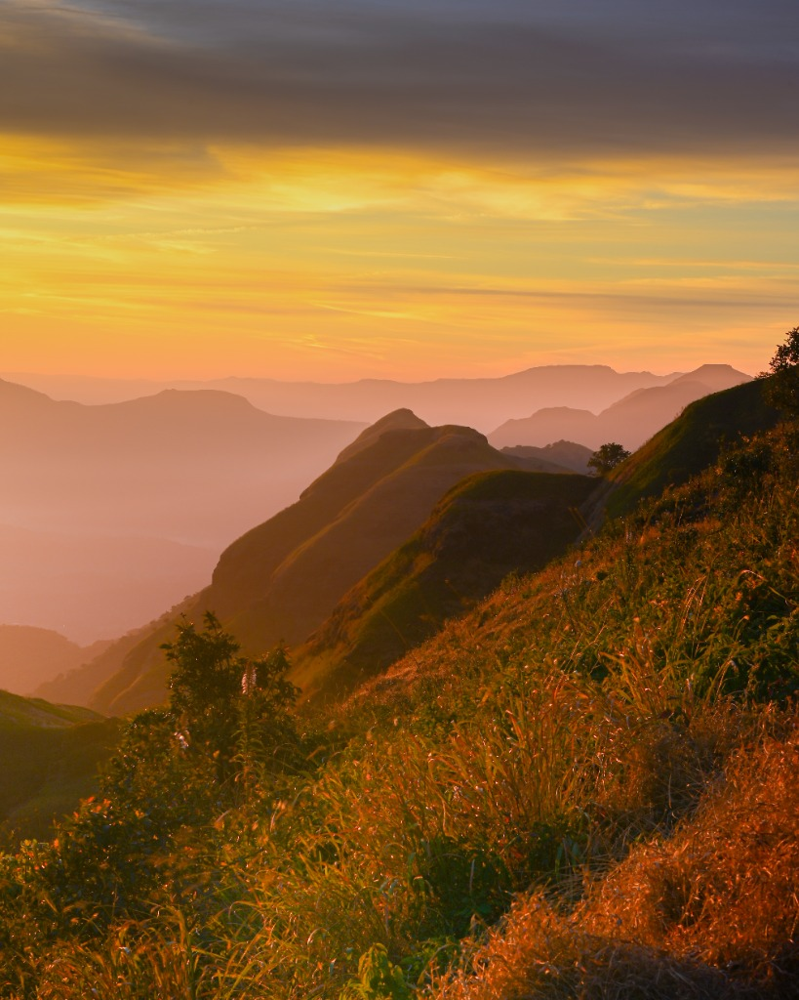
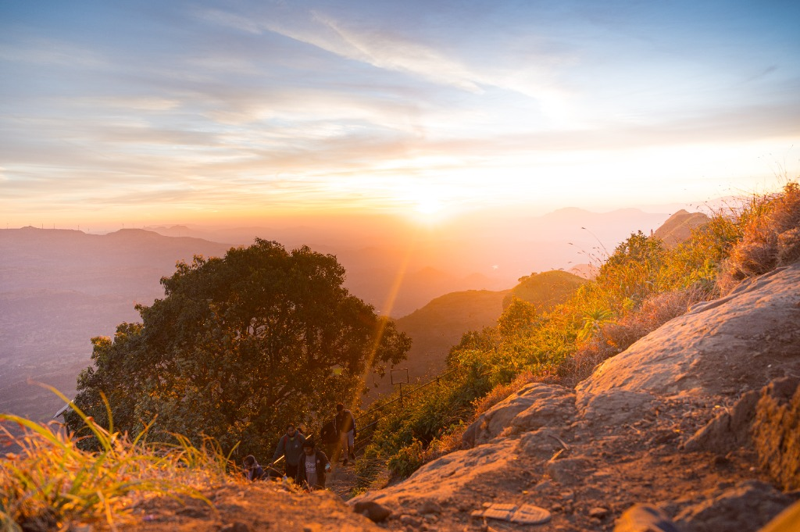
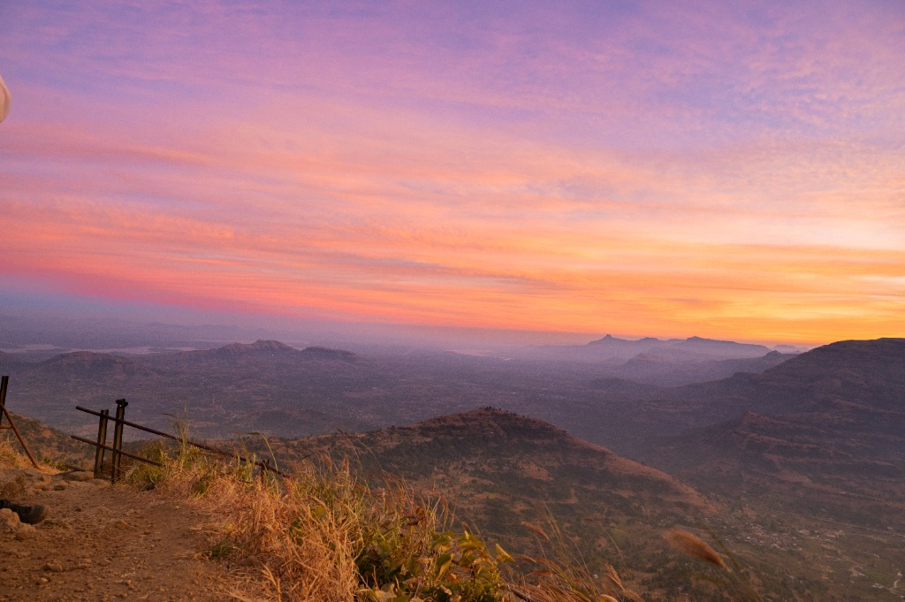
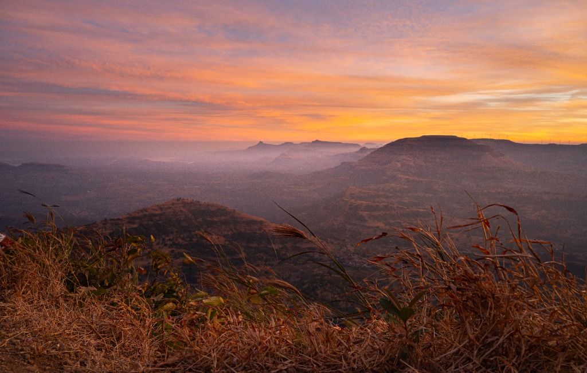

Landscape / Trek
Kalsubai
Standing at 5,400 feet, Kalsubai is Maharashtra's highest peak — a summit where the earth falls away into endless layers of the Sahyadri. This series captures the pre-dawn climb, the first light breaking over misty valleys, and the golden hour that paints every ridge in fire. A visual journal of silence, scale, and the sky meeting the mountains.


Above the clouds — The sun pierces through a sea of amber and gold at 5,400 feet

The golden ridge — First light catches the wild grass as mountain layers dissolve into morning haze

The final push — Trekkers ascend the rocky trail as the summit sun pours over the Sahyadri

The summit's edge — A lavender sky bleeds into gold as the iron railing marks the final steps of the ascent

Where sky meets earth — Sahyadri's ancient plateaus stack into infinity, framed by windswept grass at the edge of the peak